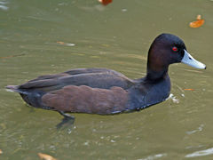
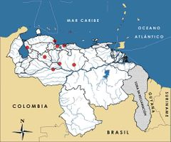

Netta erythrophthalma
| Pato negro | |
|---|---|
|  | |
| Riesgo de extinción | |
 En peligro (UICN) | |
| Clasificación científica | |
| Reino: | Animalia |
| Filo: | Chordata |
| Clase: | Aves |
| Orden: | Anseriformes |
| Familia: | Anatidae |
| Género: | Netta |
| Especie: | Netta erythrophthalma |
| Nombre binomial | |
|
Netta erythrophthalma Wied, 1832 | |
| Distribución | |
|
 Mapa de distribución de Netta erythrophthalma | |
Contenido
Información de Evaluación
- Categoría y Criterio Regional: En Peligro C2a(i)
- Fecha de Evaluación Regional: 2015
- Evaluadores: Jesús Morales-Campos y Ariany García-Rawlins
- Categoría y Criterio Global: Preocupación Menor
Justificación
Evaluaciones Previas
1999: Preocupación Menor
2008: En Peligro (EN)
Información General
Nombres comunes
Pato negro, pato castaño, pato de cabeza castaña, pato morado, zambullidor austral, Southern Pochard.
Notas taxonómicas
Sinónimos
Descripción
Anátido de color pardo negruzco con característicos ojos rojos. Su cabeza y cuello superior son más oscuros. La garganta, parte anterior del cuello y el área alrededor del pico son blanquecinos. El pico es gris azulado con la punta negra; la cola es marrón y tiene patas negras. Mide entre 48 y 51 cm de longitud (Gómez-Dallmeier y Cringan 1989, Hilty 2003, Restall et al. 2007).
Distribución
Especie de distribución y situación enigmática que presenta dos subespecies muy separadas entre sí. La subespecie Netta erythrophthalma brunnea se distribuye en África, donde es común en localidades del sur y oriente de ese continente. La otra subespecie de Suramérica, denominada Netta erythrophthalma, es reportada con registros aislados en los países andinos (Venezuela, Colombia, Ecuador, Perú y Bolivia) y con una distribución separada, más continua y amplia en el noroeste de Brasil. En Venezuela se cuenta con reportes para los estados llaneros (Apure, Portuguesa), y desde Aragua y Carabobo hasta Falcón y Zulia. Se le encuentra en pantanos de agua dulce, lagunas y sembradíos de arroz (Gómez-Dallmeier y Cringan 1989, Hilty 2003, Restall et al. 2007).
- Sistema: Terrestre, Dulceacuícola
- Bioregión:
- Intervalo altitudinal (m): 3700
- Endémica: No
Situación
En Venezuela es una especie muy poco común, con escasos registros, de distribución fragmentada y con una población en descenso importante. En los años cincuenta era relativamente común en el área del lago de Valencia (Carabobo), y cerca de Chichiriviche (Falcón). Se reporta que en nuestro país existen entre 5000 y 10.000 individuos (Kear 2005), lo que permite calcular en cerca de 20 a 40% de la raza suramericana, aunque todo indica que esta cifra es una sobrestimación y que son extrapolaciones muy vagas. De hecho, estimados recientes calculan un número menor a 2500 en Venezuela (Wetlands International 2015), o incluso en toda la región andina. De ser así, la población venezolana remanente sería apenas una fracción de esta cifra. En todo caso, los registros contemporáneos son contados. Existen reportes de pequeños grupos de siete a diez individuos en el estado Portuguesa (Ginés y Aveledo 1958, Casler y Lira 1979, Gómez-Dallmeier y Cringan 1989). Su situación en general es paradójica. En el ámbito global no se le considera amenazada y la IUCN la clasifica en la categoría Preocupación Menor (BirdLife International 2015). Del mismo modo, se indica que en el centro y noreste de Brasil la población aumentó debido a las actividades humanas. Sin embargo, los grupos andinos parecen tener una tendencia radicalmente opuesta. En Argentina se le clasifica en la categoría Datos Insuficientes; en Perú En Peligro, y en Ecuador y Colombia se le considera En Peligro Crítico (Suárez, L. y García 1986, Pulido 1991, Ellis-Joseph et al. 1992, Bertonatti y González 1993, Granizo et al. 2002, Rodríguez, J. P. y Rojas-Suárez 2003). Es factible su extinción tanto en Colombia como en Perú, país del cual se cuenta con un último reporte de 1962 (Pulido 1991, Renjifo et al. 2002, Schulenberg et al. 2007).
- EOO (km2): Temporalmente sin información
- AOO (km2): Temporalmente sin información
- Tendencia Poblacional: Decreciendo
Amenazas
Se encuentra afectada principalmente por la pérdida de hábitat y la contaminación. La causa de la disminución de las poblaciones en Ecuador fue su sensibilidad a cambios en el lecho de los lagos, debido a la sedimentación causada por la erosión en las cuencas, ya que la especie prefiere lagos y lagunas con algas y vegetación emergente (Ellis-Joseph et al. 1992, Granizo et al. 2002). Aunque no pareciera ser un objetivo atrayente para la cacería no debe descartarse esta amenaza, dado que la actividad de caza es generalizada para otras especies de patos que se encuentran en su área de distribución.
Conservación
En África ha sido ampliamente estudiada, lo que contrasta con su situación en América, donde es muy poco lo que se conoce sobre la especie. En Venezuela no se han realizado esfuerzos específicos para su conservación. Considerando su situación en el resto de la región andina, es importante priorizar a Netta erythrophthalma en nuestro país y evaluar su situación taxonómica, tamaño poblacional, distribución, áreas de nidificación, sensibilidad y tolerancia a cambios ambientales, así como realizar planes de manejo en vida silvestre y ensayos de cría en cautiverio (Rodríguez, J. P. y Rojas-Suárez 2003).
Autorías
Autores originales
Franklin Rojas-Suárez, Miguel Lentino y Christopher J. Sharpe
Colaboradores
Ilustrador
Astolfo Mata
Referencias
- Bertonatti, C. y González, F. (1993). Lista de vertebrados argentinos amenazados de extinción (2a ed.). Boletín Técnico de la Fundación Vida Silvestre ArgentinaBuenos Aires, Argentina. 35 pp.
- BirdLife International. (2015). IUCN Red List for birds. Disponible en www.birdlife.org, consultada el 08/07/2015.
- Casler, C. L. y Lira, J. R. (1979). Censos poblacionales de aves marinas de la costa occidental del golfo de Venezuela. Boletín del Centro de Investigaciones Biológicas 13: 37-85.
- Ellis-Joseph, S., Hewston, N. y Green, A. (1992). Global Waterfowl Conservation Assessment and Management Plan. First review draft. Captive Breeding Specialist Group (CBSG/SSC/IUCN), The Wildfowl y Wetlands Trust. 77 pp.
- Ginés, H. y Aveledo, R. (1958). Aves de Caza de Venezuela. Monografí¬a Nº 4. Sociedad de Ciencias Naturales La Salle. Caracas.
- Gómez-Dallmeier, F. y Cringan, A. T. (1989). Biology, Conservation and Management of Waterfowl in Venezuela. ICBP, FUDENA, WWF y otros. Caracas. 351 pp.
- Granizo, T., Pacheco, C., Ribadeneira, M. B., Guerrero, M. y Suárez, L. (2002). Libro Rojo de las Aves del Ecuador. SIMBIO, Conservación Internacional, EcoCiencia, Ministerio del Ambiente, UICN. Quito, Ecuador.
- Hilty, S. L. (2003). Birds of Venezuela, second edition. Princeton University Press. Princeton, NJ, USA. 878 pp.
- Hilty, S. L. y Brown, W. L. (1986). A Guide to the Birds of Colombia. Princeton University Press. 836 pp.
- Kear, J. (Ed.) (2005). Ducks, Geese and Swans. Oxford University Press. Oxford, Reino Unido.
- Phelps Jr., W. H. y Meyer de Schauensee, R. (1979). Una guía de las Aves de Venezuela. Gráficas Armitano. Caracas. 484 pp.
- Pulido, V. (1991). El Libro Rojo de La Fauna Silvestre del Perú. Instituto Nacional de Investigación Agraria y Agroindustrial. Lima, Perú. 219 pp.
- Renjifo, L. M., Franco-Maya, A. M., Amaya-Espinel, J. D., Kattan, G. H. y López-Lanús, B. (2002). Libro Rojo de Aves de Colombia. Instituto Alexander von Humboldt, Ministerio del Medio Ambiente. Bogotá, Colombia.
- Restall, R., Rodner, C. y Lentino, M. (2006). Birds of Northern South America, an Identification Guide. Volume 1: Species Accounts. Volume 2: Plates and Maps. Yale University Press. New Haven, USA and London, UK. 880 pp.
- Rodríguez, J. P. y Rojas-Suárez, F. (1999). Libro Rojo de la Fauna Venezolana, segunda edición. PROVITA, Fundación Polar. Caracas. 444 pp.
- Rodríguez, J. P. y Rojas-Suárez, F. (2003). Libro Rojo de la Fauna Venezolana (2a ed. reim.). Provita, Fundación Polar. Caracas. 472 pp.
- Rodríguez, J. P. y Rojas-Suárez, F. (Eds.) (2008). Libro Rojo de la Fauna Venezolana, tercera edición. Provita y Shell Venezuela, S. A. Caracas, Venezuela. 364 pp.
- Rojas-Suárez, F., Lentino, M. y Sharpe, C. J. (2015). Pato negro, Netta erythrophthalma. En: J.P. Rodríguez, A. García-Rawlins y F. Rojas-Suárez (eds.) Libro Rojo de la Fauna Venezolana. Cuarta edición. Provita y Fundación Empresas Polar, Caracas, Venezuela. Recuperado de: animalesamenazados.provita.org.ve/content/pato-negro Mié, 04/04/2018 - 12:38
- Schulenberg, T. S., Stotz, D. F., Lane, D. F., O’Neill, J. P. y Parker, T. A. (2007). Birds of Peru. Princeton University Press. Princeton, NY, USA.
- Suárez, L. y García, M. (1986). Extinción de animales en el Ecuador. Fundación Natura. Quito. 153 pp.
- Wetlands International. (2015). Waterbird Population Estimates. Disponible en wpe.wetlands.org, consultada el 18/07/2015.